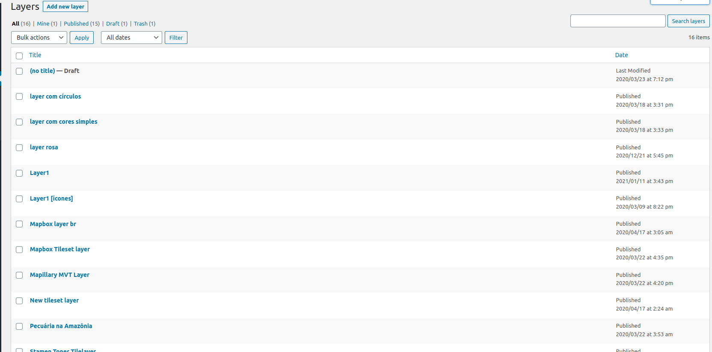

Creating a layer
One of the custom post types that JEO plugin provides is Layer. Is in the layer where you will be able to add legend and color to your map. A map may contain one or more layers.

Entering the Layer post editor, you'll see a preview of the current layer (or a default layer if the current layer haven't been edited yet) and four sidebar panels: Settings, Carto Integration, Attributions and Legend.

Layer settings
On the Layer settings panel, you can change the layer type.
JEO supports four layer types out-of-the-box:
You can also inform an address, following the standard username/id, to compose your map style. If an access token is needed for this layer, you can put it into the Acess token input.

There's also an Edit interactions button. Here, you can add popups to your layer when specific actions (clicking or hovering the mouse) are made (e.g.: Clicking on a building and displaying its height)

Layer legend
On the Layer legend panel, you can add legends to your layer (barscale, simple-color, icons or circles and colorize them.

Creating a Carto integrated Layer
When the checkbox Use integration is selected, the following field shows up:
- SQL Query: Code that'll be used to retrieve layer data from Carto.


To get this SQL Query, go to your Carto Dashboard page and click on the map which has the layer to be used in the plugin.

Inside the map page, a layer list will be shown.

Select a layer and go to Data tab. At the sidebar's bottom, change from Values to SQL. The code that will be shown is the SQL Query.